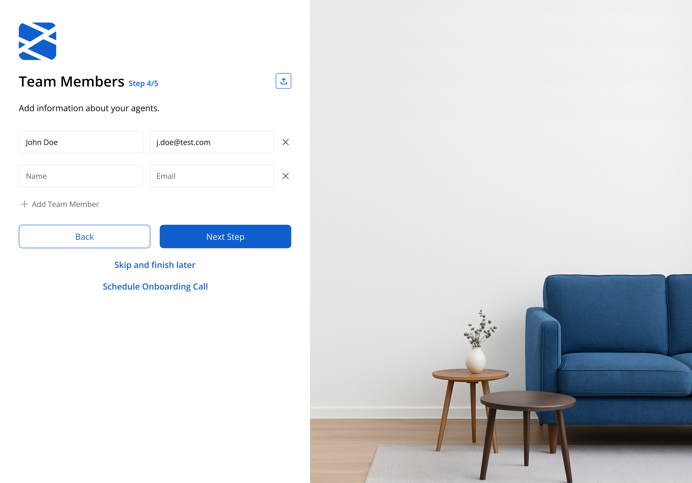
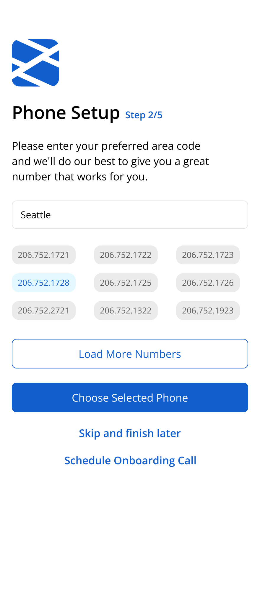
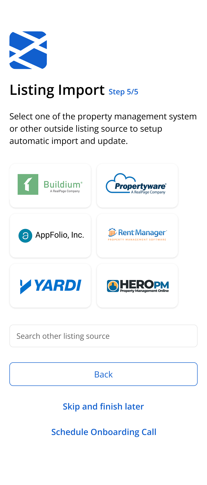

Onboarding process redesign
Context
The original onboarding flow asked users to complete a long setup form upfront, with very little sense of progress or structure. Even though the information itself wasn’t especially complicated, the flow felt heavier than it actually was.
During early testing, people often paused on unclear fields, skipped information they didn’t understand, or lost confidence halfway through the process.

Goals
The redesign focused on making the onboarding feel easier to move through without hiding important information.
Main goals included:
- breaking the flow into smaller, more manageable steps
- making the form easier to scan and understand
- helping users understand why certain information was being requested
- reducing hesitation during setup
One of the main challenges was balancing clarity with speed — especially for users trying to complete setup quickly.

Approach
Before redesigning the flow, I analyzed onboarding analytics, database data, and user behavior recordings to understand how people actually moved through setup.
One of the key goals was identifying which steps were truly important, which information users frequently changed later, and which parts of the process created friction without adding much value.
This helped separate critical setup information from things that could be delayed, simplified, or reorganized into later stages of the experience.
The redesign was driven by the question: what does the user really need to do right now to get started successfully?
Based on these findings, I restructured the onboarding into shorter sections with clearer progression and simplified field hierarchy.
Instead of treating onboarding like a single long form, the experience was designed more like a guided setup process.
- reorganizing fields into smaller logical groups
- removing or delaying lower-priority inputs
- simplifying labels and helper text
- adding inline guidance only where confusion usually happened
- improving spacing and visual rhythm to reduce cognitive fatigue
I also explored how imagery and layout could make the page feel less dense while still keeping the form itself as the primary focus.


Outcomes
The redesign reduced the feeling of complexity during onboarding and made the flow easier to navigate for first-time users.
Clearer grouping and simpler guidance helped reduce hesitation around unfamiliar fields, while the modular structure made the flow easier to iterate on and test over time.
Success was measured through metrics like onboarding completion rate, drop-off points between steps, time spent completing setup, and support feedback related to onboarding confusion or blocked setup flows.